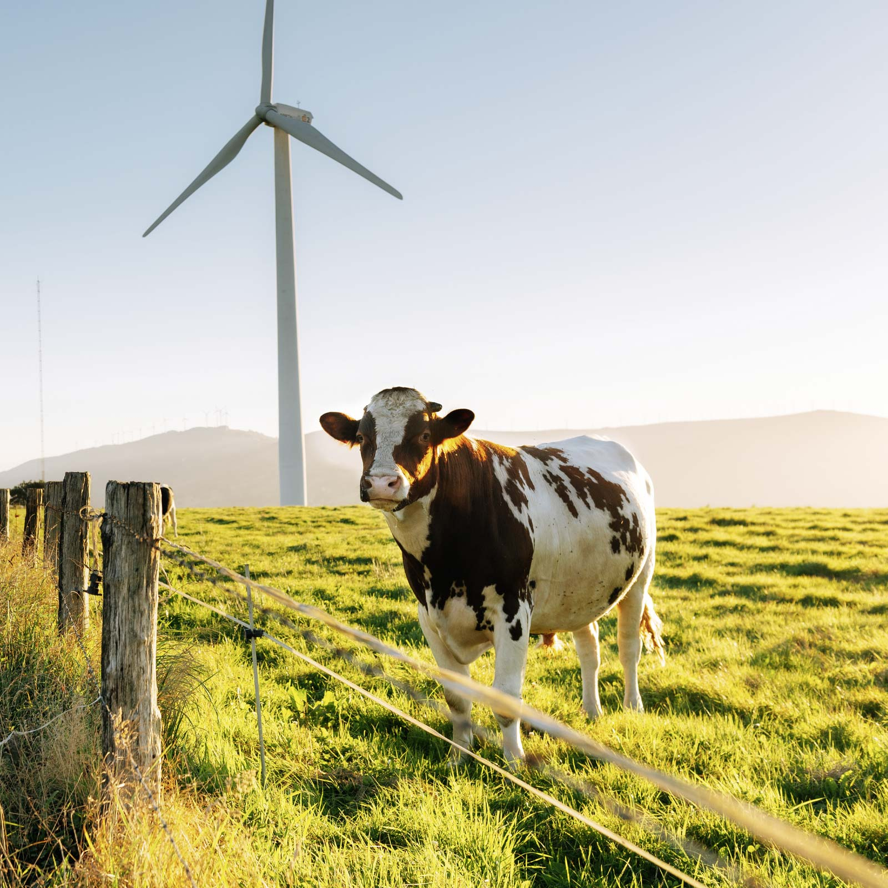
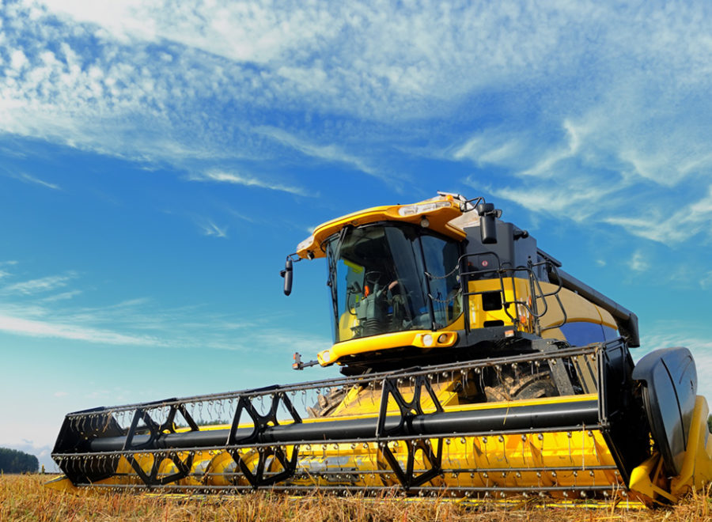

Thema 1
Pflanzen
Ökologischer Anbau, Agroforstwirtschaft und Rewilding – wie Böden regeneriert und CO₂ dauerhaft gebunden werden kann.
Lösungsvorschläge
Thema 2
Tierhaltung
Artgerechte Haltung, Weidewirtschaft und reduzierter Antibiotikaeinsatz – wie Tiere und Ökosysteme gleichzeitig profitieren.
Lösungsvorschläge
Thema 3
Maschinen
Präzisionslandwirtschaft, Elektrotraktor und KI-gestützte Feldroboter: Technologie im Dienst der Natur statt gegen sie.
Lösungsvorschläge